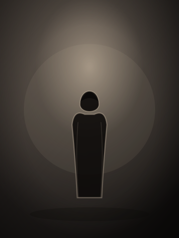

角色列表
春生
角色视觉参考 主视图 / 身份基准图

主视图当前：基准 v3 · 主视图 · 世界专属立绘 2 张
图像提示 main_portrait
出图参数 随提示词一起提交
性能组
尺寸
画幅
负向词
seed锁脸靠 Bible，不靠固定 seed
角色 Bible 来源标记
人物摘要 外貌 / 服装 / 性格 / 背景
关系 暂无关系
关系类型 / 描述 / 来源 · 单向或双向
悬停高亮关系线，点击节点切到该角色；主角实心、配角空心、路人小点。
一致性方案（原型补充 · 来自调研）
◆
脸按角色档案锁死，不参与推荐、不进随机池。上传参考照片只为锁脸，换的是衣橱不是脸；
负向词写死「脸部漂移 / 衣服漂移 / 新增配饰」。
最强角色 LoRA 训练需训练集
中高详细描述锚点（本项目：角色卡 Bible）成本低
中同种子 + 相似提示词易漂移
辅助图生图精修改细节
弱提示词里放参考图不稳
Prompt 资产包 4 项 · 均可复制
身份设定
说话方式
试读方式
能力设定
角色定位
背设与使用
一致性巡检（原型补充 · 来自调研）
扫一整套图，指出哪张、哪部分漂了。